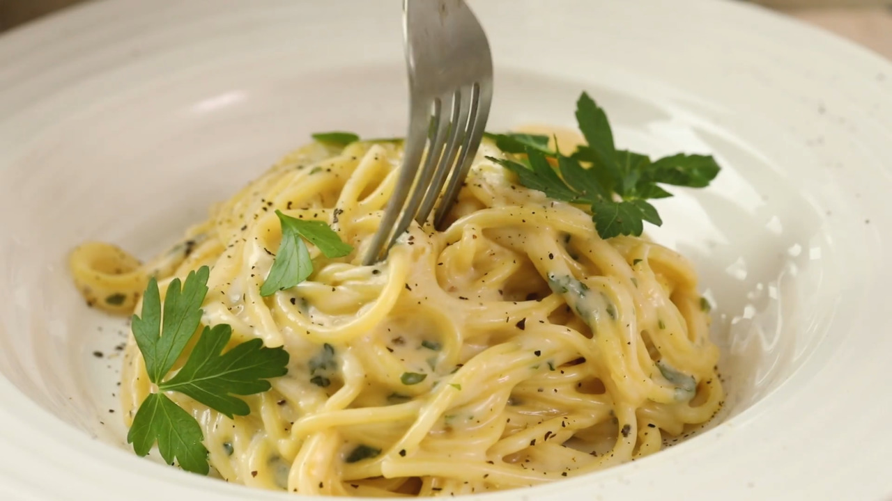

Pasta

Description
ingredients
- pasta
- cheese
- olive oil
- pink sult
cooking
- Firstly, boil pasta for 8-10 munutes
- Secondly, while the pasta is getting boiled, chop parmigiano down to grains with a big sharp knife
- Thirdly, put all ingredients in a boul and mash for a while.
- Enjoy :)
Oh gosh! It's so tasty after a little run, mm!